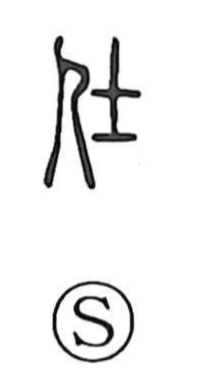

仕

Uncategorized
Kun: tsukaeru | On: shi, ji
to serve ・ to do ・ service
Explanation
仕 is a phono-semantic character: the person element 亻 supplies the human actor, while 士 (shi) serves as the phonetic and originally depicted a small ritual broadax held blade-down, an emblem of the warrior class and its rank. From this image of the warrior who serves his king, the character took on the sense “to serve,” later generalized to serving one’s superior in a broader sense. In Japanese it naturally extends to everyday acts of doing and arranging, which is why it appears in words such as shigoto (work), shikake (device), shiire (stocking), shitate (tailoring), shiokuri (remittance), shikomi (training), shidashi (catering), and shiwake (classification).